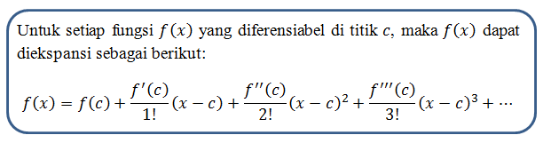
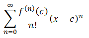

Selamat datang di halaman tugas komputasi numerik¶
DEFINISI MACLAURIN¶
Suatu fungsi f(x) yang memiliki turunan
,
,
, dan seterusnya yang kontinyu dalam interval
dengan
maka untuk
disekitar
yaitu
,
dapat diekspansi kedalam Deret TaylorDefinisi.
Berikut algoritma dari maclaurin¶

Dengan algoritma diatas kita dapat menyerderhanakannya sebagai berikut:

berikut contoh implementai dari maclaurin
f(x)= e2x $$ f(x)≈1+2x \displaystyle+\frac{{{{f}^{{\text{}}}{\left({2x^2}\right)}}}}{{{3}!}} \displaystyle+\frac{{{{f}^{{\text{}}}{\left({2x^3}\right)}}}}{{{3}!}} \displaystyle+\ldots+… $$
sekarang kita masukan misal x=0 $$ f(0)≈1+2(0) \displaystyle+\frac{{{{}^{{\text{}}}{\left({2(0)^2}\right)}}}}{{{3}!}} \displaystyle+\frac{{{{}^{{\text{}}}{\left({2(0)^3}\right)}}}}{{{3}!}} \displaystyle+\ldots+… $$
jadi ketika x =0 maka hasil akan tetap 1 mekipun banyak suku dan literasi
Listing Program¶
membuat program supaya dapaat mengekspansi bilangan e^2x dengan nilai x=4 hingga nilai menjadi kurang dari 0,001 bisa dengan listing program sebagai berikut.
import math x=4 coba =1 a = 0 b=1 while coba>0.001: f_x = 0 f_y = 0 for i in range(a): f_x += (2**i)*x**i/math.factorial(i) for j in range(b): f_y += (2**j)*x**j/math.factorial(j) coba = f_y-f_x a+=1 b+=1 print(coba)
output:
1.0 8.0 32.0 85.33333333333333 170.66666666666669 273.0666666666666 364.08888888888896 416.1015873015872 416.1015873015872 369.8680776014112 295.89446208112895 215.195972422639 143.46398161509296 88.28552714774924 50.448872655856576 26.90606541645684 13.45303270822842 6.330838921519444 2.8137061873417224 1.184718394670199 0.47388735786807956 0.18052851728316455 0.06564673355751438 0.022833646454728296 0.0076112154847578495 0.0024355889549951826 0.0007494119863622473